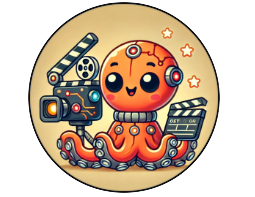
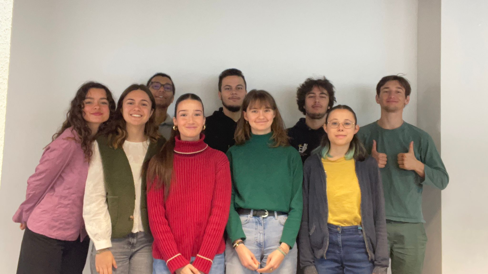

PROJET TRANSDISCIPLINAIRE

De gauche à droite : Camille Vignes, Jeanne Lefrais, Hugo Cauzid, Louison Peigné, Erwan Prudhommeaux, Emilie Valvin, Evan Elbaz, Adélie Gautier, Simon Boyer (soutenance orale de janvier 2025)
NOS RÉSEAUX SOCIAUX